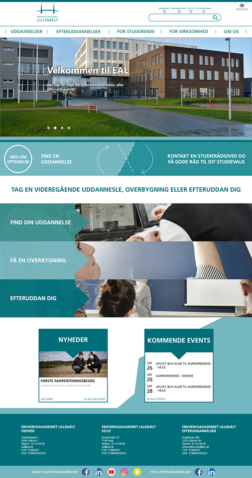
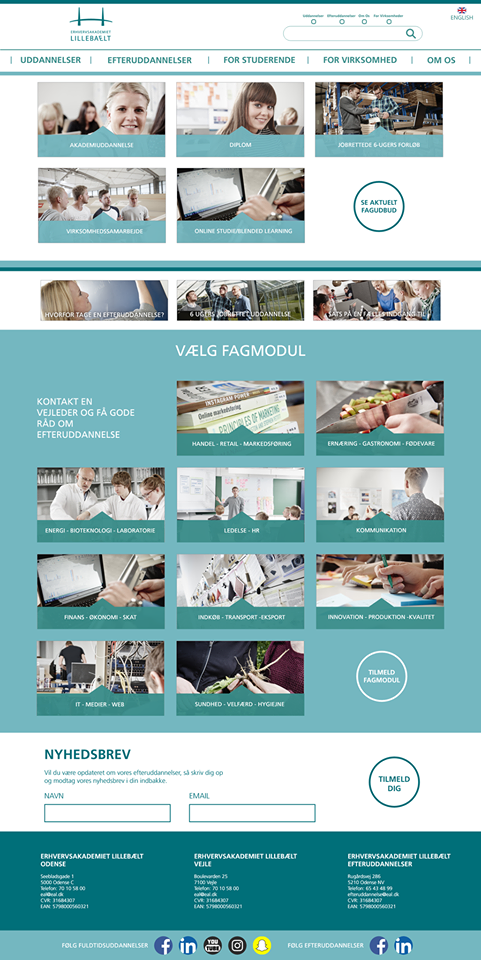
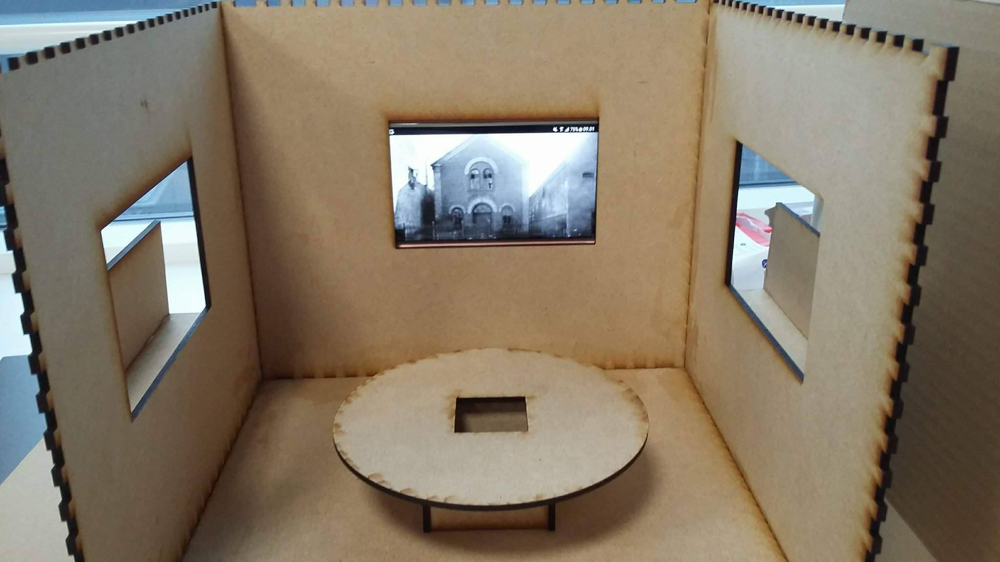
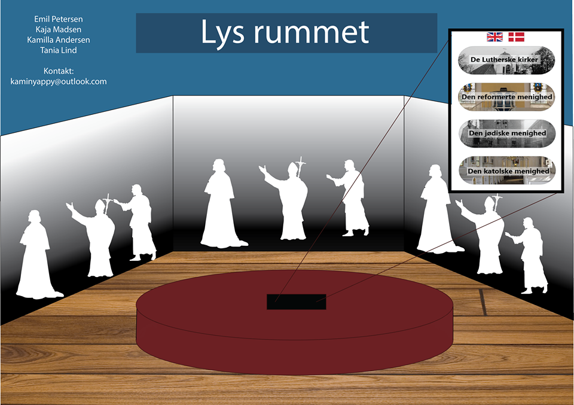
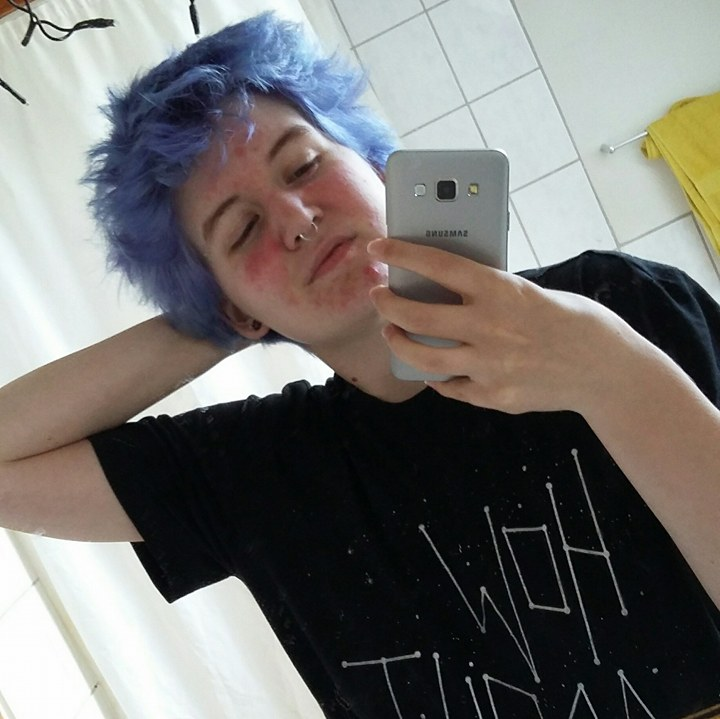
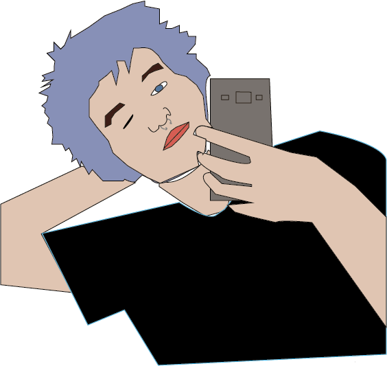

EAL were looking for new ideas for their website. This was our take on the project
 The people from the Fredericia museum wanted a new way, of telling their interesting story. My group and I, went for a room which would have a narrator that read a story that the visitor chose. The biggest part of the room, however, were the fact that it would show the people in the stories on the wall.
 I made this selfportrait in Illustrator. It was fun to work with the program more in depth.
 To show a little more of what I can code, I made this CSS animation of a cat that's crying. I also made the cat myself in Illustrator.
Here's a link to the finished animation!
Here's a magazine cover i made with InDesign.